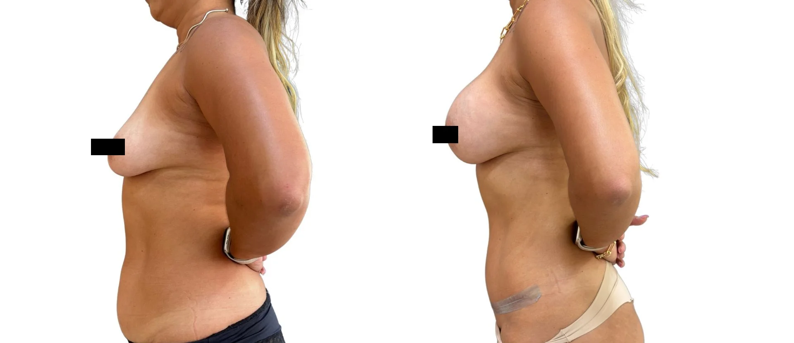

“Barriga de avental”
Dobra de pele e tecido no abdômen inferior que pode ultrapassar a região do púbis.
A abdominoplastia pode tratar excesso de pele, flacidez e alterações da parede abdominal, especialmente após gestação, perda de peso ou oscilações corporais.
Atendimento na Clínica LIV Faria Lima, em Pinheiros. Consulta presencial, teleconsulta em casos selecionados e preparo pré-operatório integrado quando indicado. A equipe informa agenda, valor da consulta e próximos passos pelo WhatsApp.

“Barriga avental”, “estômago alto” e “parece que ainda estou grávida” descrevem incômodos diferentes. Excesso de pele, gordura, diástase, hérnia, postura e conteúdo abdominal precisam ser avaliados separadamente.
Dobra de pele e tecido no abdômen inferior que pode ultrapassar a região do púbis.
Volume ou projeção acima do umbigo; pode coexistir com diástase, mas não é diagnóstico por si só.
Queixa comum quando o abdômen permanece projetado mesmo após perda de peso ou o pós-parto.
Forma mais horizontalizada ou coberta pela flacidez da pele acima do umbigo.
Excesso cutâneo percebido nas roupas, ao sentar ou durante exercícios.
Situação frequente após gestação, efeito sanfona ou grande perda de peso.
Excesso de pele, flacidez ou alteração da parede abdominal podem exigir estratégias diferentes. A avaliação separa pele, gordura e diástase antes de indicar a técnica.
A consulta diferencia pele, gordura, diástase, cicatrizes prévias e qualidade dos tecidos para definir se faz sentido abdominoplastia, lipoaspiração ou associação.
Após gestação, perda de peso ou flacidez importante, quando a pele não retrai de forma suficiente.
Diástase ou fraqueza da parede abdominal podem fazer parte do diagnóstico e mudar o planejamento.
A posição e extensão dependem da anatomia e do excesso de pele.
A abdominoplastia pode melhorar excesso de pele e contorno, mas envolve cicatriz planejada, recuperação mais estruturada e limitações iniciais de postura, esforço e rotina.
A indicação depende da quantidade de pele, flacidez, diástase, cicatrizes prévias e distribuição de gordura.
Para excesso de pele e flacidez mais significativos, com cicatriz planejada em região baixa.
Para gordura localizada quando a pele tem boa retração e não há excesso cutâneo relevante.
Ver lipoaspiraçãoExigem avaliar pele, parede abdominal, rotina e recuperação de forma individual.
Ver contorno corporalAs fotos ajudam a ilustrar planejamento e cicatrização, mas cada resultado depende de anatomia, técnica, recuperação e cuidados pós-operatórios.

Imagem educativa. Resultado depende de anatomia, técnica e cicatrização.

Imagem autorizada e sem promessa de resultado individual.
Caso real autorizado, apresentado em conjunto e sem retoques de forma corporal. A paciente realizou cirurgia combinada de mama e abdome; o resultado não representa uma técnica isolada. Resultados variam conforme anatomia, indicação, cicatrização e cuidados pós-operatórios. Resultados insatisfatórios, intercorrências e complicações são possíveis; riscos específicos e eventual necessidade de revisão são discutidos na avaliação médica.

Na avaliação são discutidos pele, gordura, parede abdominal, umbigo, cicatrizes, riscos, preparo clínico e tempo de recuperação.
Entender incômodo, rotina, objetivos e expectativas.
Avaliar anatomia, pele, cicatrizes possíveis e proporções.
Discutir técnica, alternativas, limites e associações.
Orientar exames, preparo, recuperação e orçamento.
Cirurgiã plástica, CRM-SP 191605 e RQE 110472, com formação pela UNICAMP, a Dra. Amanda avalia anatomia, pele, tecidos, cicatrizes, recuperação e segurança clínica. O plano é construído para responder à queixa da paciente com proporção, naturalidade e limites claros.
As consultas acontecem na Clínica LIV Faria Lima, em Pinheiros, próxima à Estação Pinheiros do metrô e com estacionamento pago no local. A jornada pode integrar consulta, exames, preparo clínico e avaliação cardiológica pré-operatória quando indicada.
Quando indicada, a avaliação cardiológica pré-operatória pode ser organizada na própria Clínica LIV com o Dr. Daniel Added, cardiologista formado pela USP e médico do InCor, CRM-SP 199104. Isso facilita exames, análise de risco e comunicação entre os profissionais envolvidos.
Algumas pacientes precisam tratar pele, gordura localizada e parede abdominal em conjunto. Em outros casos, lipoaspiração ou contorno corporal pode ser mais adequado que abdominoplastia isolada.
Nos procedimentos cirúrgicos, o preparo inclui avaliação clínica, exames pré-operatórios e análise dos fatores de risco. Quando indicada, a avaliação cardiológica pré-operatória pode ser integrada à jornada na própria Clínica LIV com o Dr. Daniel Added, cardiologista formado pela USP e médico do InCor, CRM-SP 199104.
Não principalmente. A abdominoplastia trata excesso de pele, flacidez e, quando indicado, diástase. Gordura localizada pode exigir lipoaspiração associada ou outra estratégia.
Em alguns casos, sim. A avaliação da parede abdominal define se há diástase e se a correção faz sentido no planejamento cirúrgico.
A cicatriz fica planejada em região baixa do abdome, mas extensão e posição variam conforme excesso de pele, anatomia e técnica.
Não. O ideal é avaliar a cirurgia quando o peso está mais estável e as expectativas são realistas.
Depende da extensão da cirurgia, rotina de trabalho e recuperação individual. Esse planejamento é discutido em consulta.
A equipe orienta formato de consulta, disponibilidade, valor, nota fiscal e próximos passos. Não é necessário enviar fotos ou detalhes clínicos pelo site para começar.
A equipe entende sua queixa, sua prioridade e o procedimento de interesse.
Você recebe informações sobre consulta presencial, teleconsulta inicial em casos selecionados, agenda e valores.
Na consulta, a Dra. Amanda avalia técnica, limites, segurança, recuperação e próximos passos.
Converse com a equipe para receber disponibilidade, valor da consulta e orientação sobre o primeiro atendimento. A indicação cirúrgica só é definida após avaliação médica.